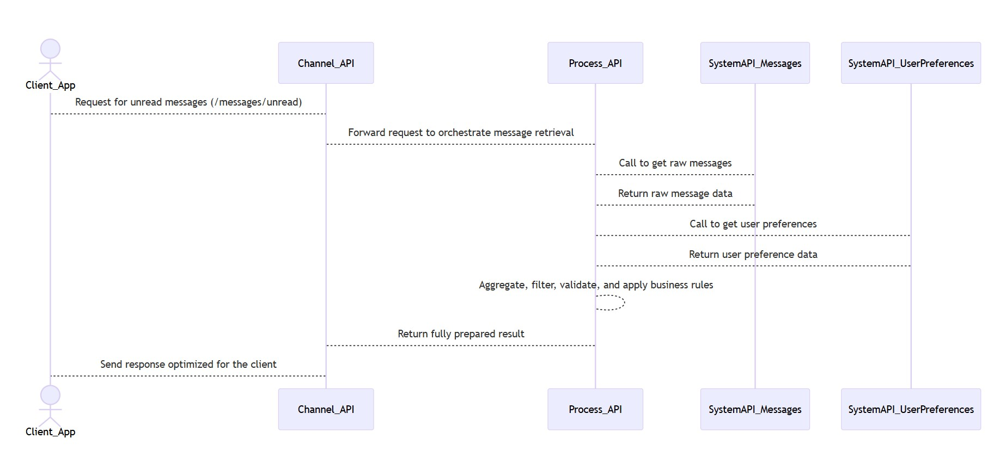

SPC Architecture Overview¶
The SPC (System – Process – Channel) architecture is a layered API design pattern used to logically separate responsibilities. It helps simplify solution design, maximize reuse, and improve scalability and maintainability.
System APIs¶
Primary Role: Provide raw, unprocessed data directly from backend systems.
System APIs: - Interact with source systems or databases - Expose reusable CRUD-style endpoints - Contain minimal or no business rules - Perform basic input/output validation only - Maintain a stable interface across consumers
Example System APIs
- GetUserProfile
- GetAccountData
- GetHoldings
- GetRawMessages
Process APIs¶
Primary Role: Orchestrate business rules and convert raw data into client-ready output.
Process APIs: - Call and combine multiple System APIs - Apply transformations, enrichment, filtering, aggregation - Validate fields, enforce security and authorization - Implement message formatting, unread count logic, caching, and data normalization - Contain all business logic for inbox processing
Example Process APIs
- GetUserInbox
- ComputeUnreadCount
- PrepareDividendMessageFeed
Channel APIs¶
Primary Role: Deliver the final API output to client-facing applications (mobile, web, portals).
Channel APIs: - Adapt Process API outputs for specific channels - Apply pagination, sorting, localization, and UI formatting - Optimize responses for device performance and usability - Contain minimal logic; they depend on the Process API for actual computation
Example Channel Endpoints
- /messages/unread
- /messages/latest
- /messages/read/{id}
How the Layers Work Together¶

- A user opens the web application or mobile app.
- The Channel API receives a request (e.g.,
/messages/unread). - The Channel API forwards the request to an appropriate Process API.
- The Process API orchestrates backend calls:
- Queries multiple System APIs, such as
SystemAPI_MessagesandSystemAPI_UserPreferences - Aggregates, filters, and validates returned data
- Applies message-level business rules (e.g., unread counts, formatting, priority logic)
- Queries multiple System APIs, such as
- The Process API returns a complete, fully prepared payload to the Channel API.
- The Channel API formats this payload for the requesting device and returns the response.
Business Value of SPC Architecture¶
Why SPC matters
-
Reusability
System APIs serve multiple Process APIs without duplication. -
Clear Separation of Concerns
All orchestration and domain rules reside in Process APIs — Channel APIs remain lightweight. -
Scalability
Channel APIs scale independently and enable channel-specific optimization (mobile, web, portals). -
Maintainability
Feature enhancements and new use cases only require changes at the Process layer, preserving Channel and System stability.
Typical Use Cases¶
Where SPC shines in a Message Inbox solution:
- Building actionable unread messages from multiple backend sources
- Enforcing read/unread tracking and cross-device synchronization
- Merging bulk and system messages into a unified inbox
- Localizing timestamps, applying preferences, and formatting content
- Delivering client-ready outputs optimized for UX and performance
End of SPC Architecture Overview